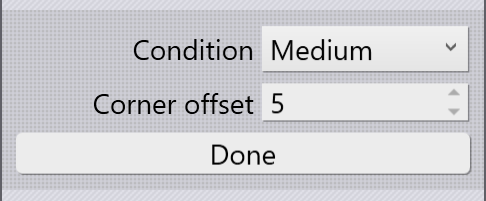

Avanceret

Afsnittet Udvidet i Laserskærepanelet har følgende indstillinger:
-
Use pie strategy: Denne indstilling vises kun, hvis der redigeres klargøring af et cirkelformet hul. For tykke plader kan små cirkelformede huller nemt kiles fast i pladen og ikke falde ud. Strategien kageudskæring skærer først en sektion formet som en kagetrekant ud af cirklen for at undgå, at den sidder fast, som det kan ses på billedet nedenfor:

-
Wait at center (sec): Denne indstilling bruges til at indstille ventetiden i midten af cirklen (for at stanseklumpen falder ud), når strategien kageudskæring anvendes.
-
Acceleration og Dynamics: Disse indstillinger bruges til at styre laserens hastighed og acceleration, når konturen skæres. I det væsentlige handler det om at afveje mellem hastigheden ved skæring og kvaliteten ved skæring. Reduced dynamikken vil byde på bedre skærekvalitet end Normal dynamikken, for eksempel.
| Man kan indstille standard dynamikken for et program. |
-
Beam offset: Skærebanen skal forskydes fra ønsket bane med halvdelen af strålediameteren. Denne indstilling styrer, hvordan det gennemføres:
-
By controller: Stråleforskydningen beregnes af NC-controlleren på maskinen baseret på strålediameteren specificeret af HMI.
-
By software: Stråleforskydningen beregnes af TecZone Laser og outputtes direkte ind i NC-programmet.
-
Fra: Der anvendes ingen stråleforskydning - midten af strålen ligger nøjagtigt på skærebanen.
-
Skift konturstørrelse

Skærebetingelsen for kun et bestemt område af en laserskæring kan ændres ved brug af knappen Switch Contour Size. Ved klik på denne, sættes panelet i en speciel tilstand:
Indstil skærebetingelsen, der skal skiftes til, og en forskydning fra et hjørne (til at give et præcist klikpunkt), og flyt musen nær et hjørne for at skifte til valgt betingelse. Billedet nedenfor viser, hvordan denne omkobling bruges to gange for kun at skære én affasning med en Small skærebetingelse: